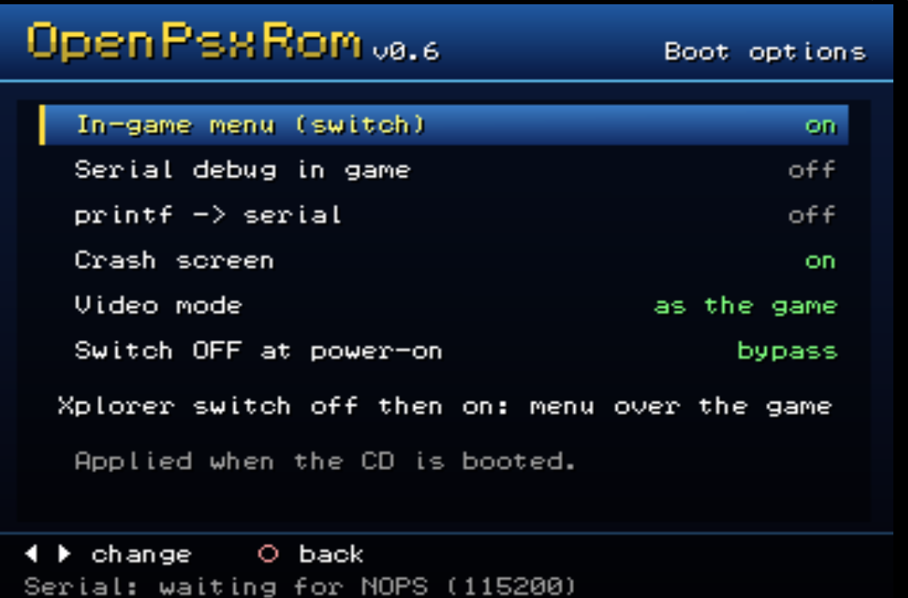
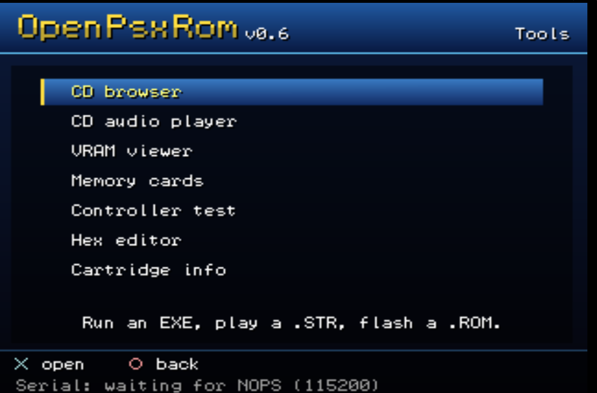
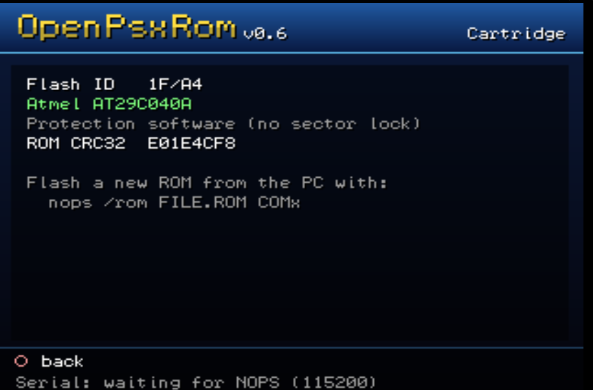

Overview
Highlights
- Everything fits in 128 KB
The whole firmware (menu, graphics and font, CD and memory card drivers, serial protocol, resident debug core, STR video decoder) is a 64 KB image whose RAM part is LZSS-compressed and unpacked at boot. The other 64 KB of the first bank hold the saves, the cheats and the settings.
- Compressed memory card saves in the cartridge
Saves are copied file by file between the memory card and the cartridge, with their icons, and stored compressed (OMC1 in an OFS1 container, see Formats). Saves are mostly empty space, so the 48 KB area holds far more than 48 KB of saves.
- Several firmwares on one cartridge
On 256 KB+ cartridges the Xplorer switch can start a second firmware (bank 2, e.g. Unirom “ROM2”), or a third one on double-chip Xplorer FX (bank 3).
nops /rominstalls an image in the bank it is built for without touching OpenPsxRom.- Safe flashing
Sony header and checksum checked before writing, page-by-page programming with read-back verification, identical pages skipped; memory card frames are read back after writing.
nopscompatibleExisting Unirom workflows (upload, dump, debug, PCDRV, GDB) keep working.
Screens

|
 |
 |
 |
Features
- Menu
Boot CD; unlock the drive and boot (burned discs, no modchip); boot options; cheats (GameShark format, stored in the flash); tools; about.
- Tools
CD browser (run an EXE, flash a .ROM, play an .STR), CD audio player, VRAM viewer, memory card manager (two panes: memory card / cartridge, animated icons), controller test, hex editor, cartridge information (flash chips, protection, CRC).
- While a game runs
In-game menu (Xplorer switch off then on): cheats on/off, code finder. printf/TTY to the serial port, crash screen with registers, remote debugging with
nops, GDB, PCDRV, video mode forcing (PAL/NTSC).- Boot log
Every boot prints the BIOS version, the flash chip(s) and IDs, the switch and bank settings, the pads, the memory cards and the CD state on the serial port.